57 receitas com frango que são deliciosas e fáceis de preparar
42 receitas com peito de frango práticas e irresistíveis
32 receitas de filé de frango para variar o cardápio do dia a dia
10 receitas de fricassê de frango cremoso que fazem sucesso na mesa
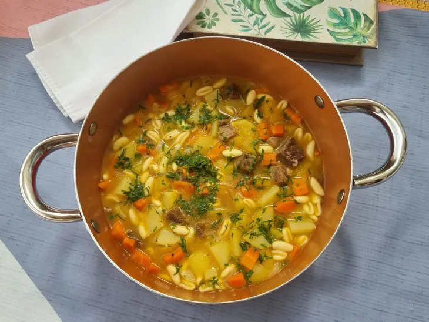
Sopa de legumes com carne
Ingredientes
Modo de preparo
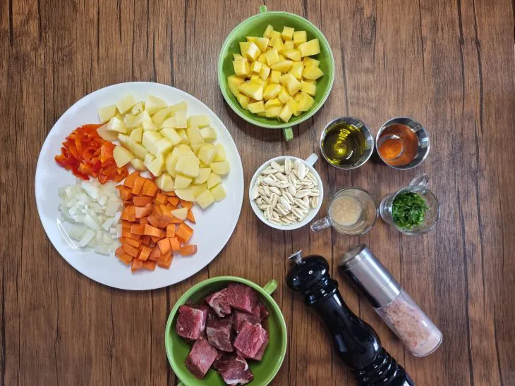
Reúna todos os ingredientes ;
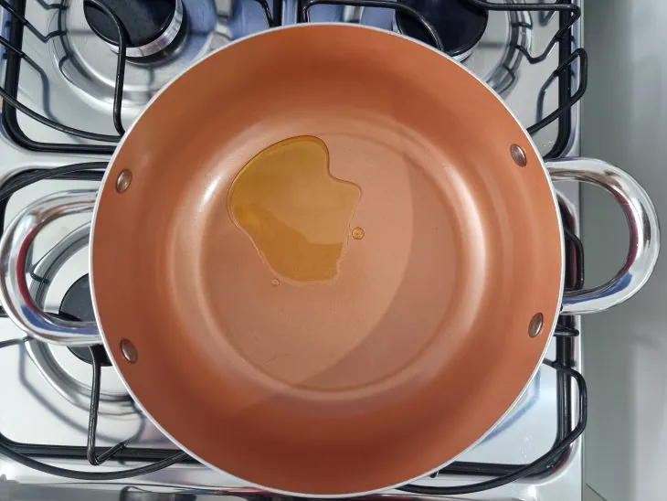
Em uma panela em fogo médio, coloque o azeite para esquentar;
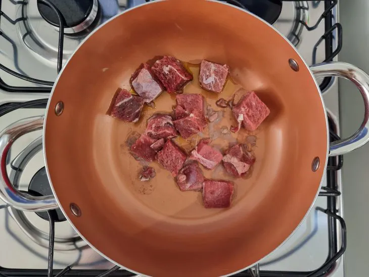
Adicione a carne quando o azeite estiver quente e deixe fritar;
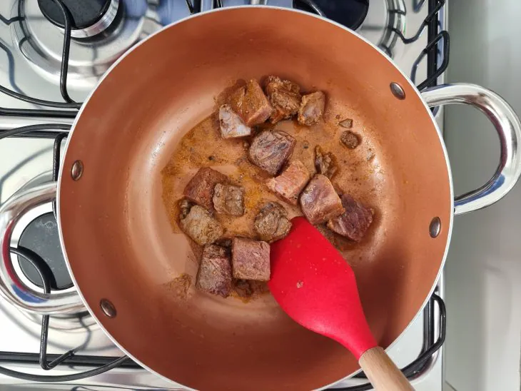
Tempere com sal, pimenta e páprica;
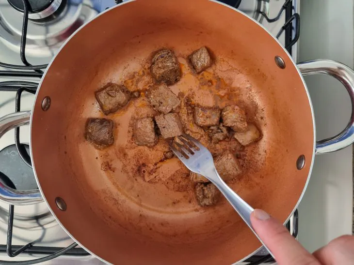
Quando a carne dourar, vire para que o outro lado também doure;
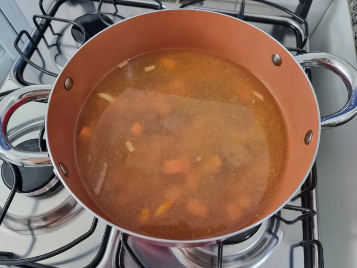
Coloque cerca de 1,5 litro de água e a cenoura picada para cozinhar com o refogado;
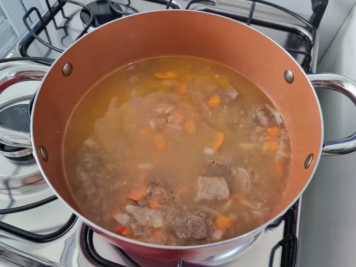
Deixe levantar fervura e cozinhe por 5 minutos;
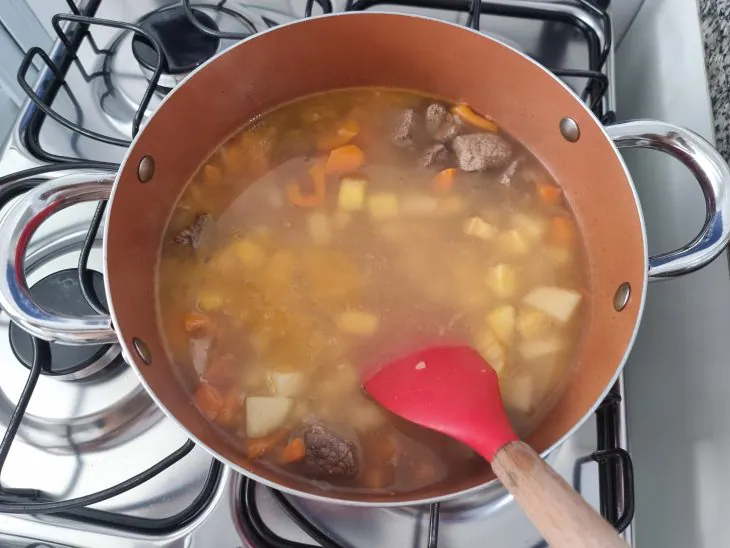
Acrescente a batata e a mandioquinha picadas e cozinhe por mais 5 minutos;
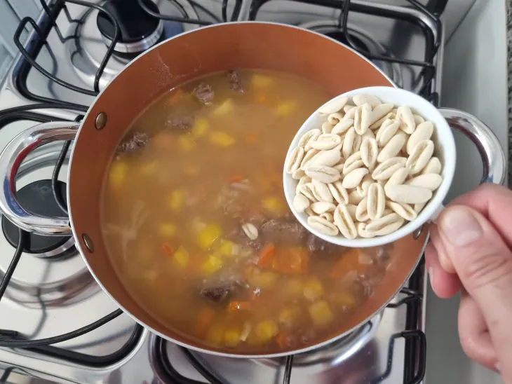
Por fim, coloque o macarrão e deixe cozinhar até que fique macio;
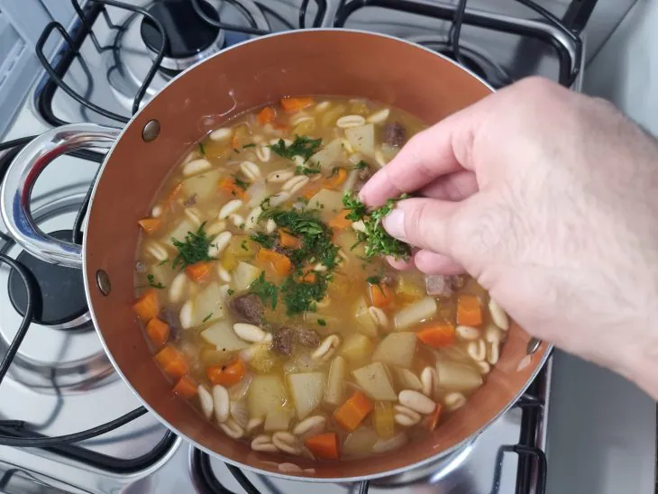
Desligue o fogo e salpique o cheiro -verde;
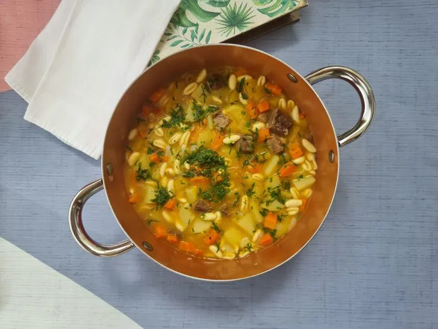
Sirva e bom apetite!
 57 receitas com frango que são deliciosas e fáceis de preparar
57 receitas com frango que são deliciosas e fáceis de preparar
 42 receitas com peito de frango práticas e irresistíveis
42 receitas com peito de frango práticas e irresistíveis
 32 receitas de filé de frango para variar o cardápio do dia a dia
32 receitas de filé de frango para variar o cardápio do dia a dia
 10 receitas de fricassê de frango cremoso que fazem sucesso na mesa
10 receitas de fricassê de frango cremoso que fazem sucesso na mesa